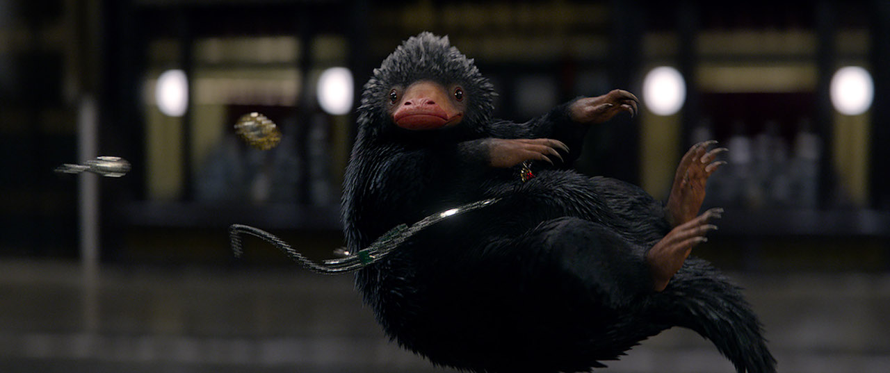

뒤로 가기

새까만 털에 긴 주둥이를 한 생물. 땅굴을 파고 다니며 반짝거리는 물건을 좋아한다. 도깨비들은 이를 이용해 보물을 찾거나 한다.
순한데다 외견도 귀엽게 생겼고 애정이 많지만 습성상 집을 무너뜨릴 가능성이 있어서 집안에서 키울 수는 없다.
뉴트의 눈치를 보면서도 뻔뻔한 태도, 보석을 보는 애절한 눈빛, 뻔히 보이는데도 나름 머리를 굴려 속이겠다고 보석을 걸고 마네킹인 척한 것처럼 어린애 같은 행동, 반항하는 듯 뉴트를 보는 모습 등이 은근히 귀엽다.
배쪽에 훔친 금품을 숨길 수 있는 주머니가 있고 아마도 탐지 불능, 늘이기 마법같은 것이 걸려 있는 것 같다.